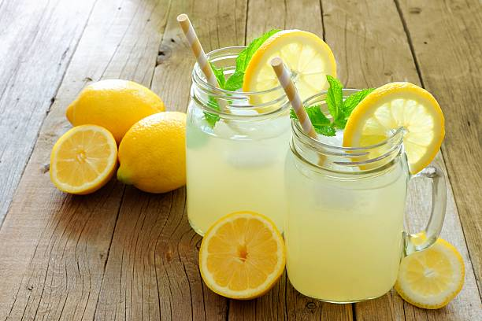

Odin Lemonade

Description:
Ingredients:
- 1 cup fresh lemon juice (about 4-6 lemons)
- 1 cup white sugar
- 4 cups cold water
- Ice cubes and lemon slices for serving
Steps:
-
In a small saucepan over medium heat, combine the sugar and 1 cup of
water. Stir until the sugar is completely dissolved. This creates a
simple syrup. Let it cool.
-
In a large pitcher, combine the lemon juice, the simple syrup, and the
remaining 3 cups of cold water.
- Stir well.
- Serve over ice with a slice of fresh lemon.
Back to the MainPage